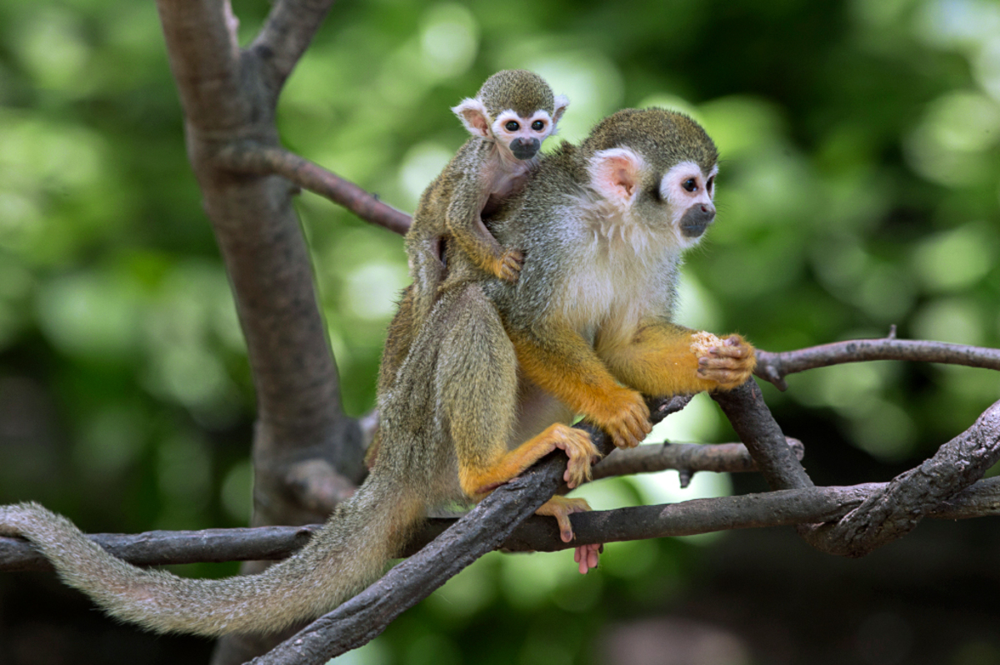

Зоопарки, спеціалізовані на мавпах
Зоопарк Сан-Дієго (San Diego Zoo)
Зоопарк Сан-Дієго є одним з найбільших у світі і має велику колекцію приматів. Тут можна побачити такі види, як орангутан, шимпанзе, гібони, а також інші види мавп, яких охороняють у спеціалізованих вольєрах.

Зоопарк Сіетла (Seattle Aquarium)
Зоопарк Сіетла спеціалізується на охороні та вивченні приматів, зокрема різних видів мавп. Тут можна побачити шимпанзе та інших приматів у природних для них умовах.
Зоопарк Бронкса (Bronx Zoo)
Зоопарк Бронкса в Нью-Йорку активно працює над збереженням рідкісних видів приматів, зокрема горил, шимпанзе, орангутанів та багатьох інших видів, а також має освітні програми для відвідувачів.
